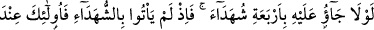
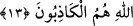
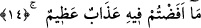

13. Onların (iftirâcıların) da bu konuda dört şâhid getirmeleri gerekmez miydi?
Mademki şâhidleri getiremediler, öyle ise onlar Allah nezdinde yalancıların ta
kendisidirler.
“Onların da bu konuda” bu söz hakkında “dört şâhid getirmeleri gerekmez miydi?”
Niçin getirmediler? Yâni bu ağır iftirâda bulunanlar söylediklerine şâhidlik edecek dört
kişi getirmeli değil miydiler?
Bu ifâde ya önceki âyeti tamamlamaktadır ya da Allah Teâlâ’nın yeni bir sözüdür.
“Mademki şâhidleri” dört şâhidi “getiremediler, öyle ise onlar” o bozguncular
“Allah nezdinde” O’nun sağlam ve açık deliller üzerine tesis edilmiş hükmüne ve
şerîatına göre“yalancıların ta kendisidirler.” Böylece aleyhine şâhidlikte bulunulmuş
bu yalan konusunda kemâl üzeredirler. “Yalancı” adı başkalarına değil, kendilerine
verilmeye lâyık kimselerdir.
Kâşifi der ki: “Zâhirde ve bâtında yalancıdırlar. Eğer onlar şâhid getirselerdi zâhirde
yalancı olmazlardı. Ancak onlar zâhirde şâhid getirseler bile bâtında yalancıdırlar. Zira
peygamberlerin
eşleri
hakkında
bu
durum
düşünülemez.
Zâhirde
şâhid
getiremediklerinden dolayı bu işte de yalancıdırlar.”
Kurtubî der ki: “Bazen kişi isnâdında doğru olduğu halde delil getirmekten âciz
kalabilir. Şimdi bu kişi Allah’ın ilminde değil, şerîatın hükmüne göre ve zâhirde yalancı
olmuş olur. Allah Teâlâ hadleri insanın mâhiyetine taalluk eden ilmi gereği değil,
dünyada meşrû kıldığı hükmüne göre düzenlemiştir. Âlimler de dünya ile ilgili
hükümlerin zâhire/görünene göre olduğu, gizliliklerin ise Allah’a âid olduğu hakkında
görüş birliği etmişlerdir.
14. Eğer dünyada ve âhirette Allah’ın lütuf ve merhameti üstünüzde olmasaydı,
içine daldığınız bu iftirâdan dolayı size mutlaka büyük bir azâb isâbet ederdi.
“Eğer dünyada ve âhirette Allah’ın lütuf ve merhameti üstünüzde olmasaydı,” Âyet
dinleyicilere ve bütün müslümanlara birlikte hitâb etmektedir. Allah’ın dünyadaki fazlı
ve rahmeti bizlere pek çok çeşit nimetler bahşetmiş olmasıdır. Tevbe için mühlet
tanıması da bunlardan biridir. Âhiretteki fazlı ve rahmeti ise değişik cennet nimetlerinin
yanı sıra sizin için takdir ettiği af ve mağfirettir.
“İçine daldığınız bu iftirâdan dolayı” yâni daldığınız zinâ isnâdı dedikodusu
sebebiyle hemen “size mutlaka” ayıplama ve sopa cezâsının yanında küçük kalacağı